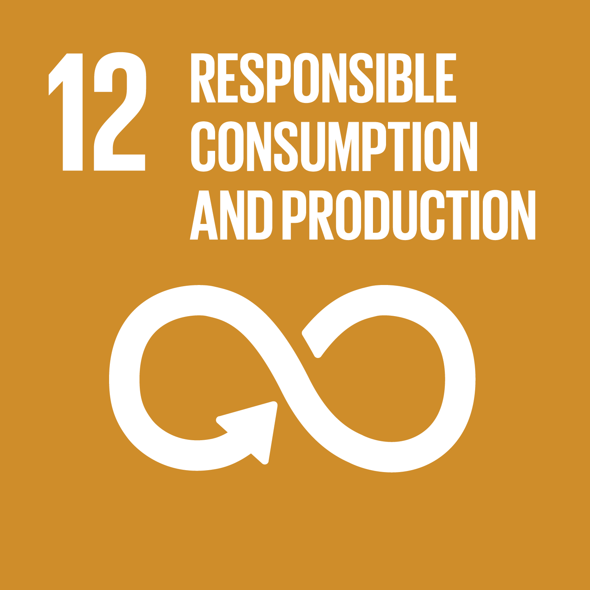
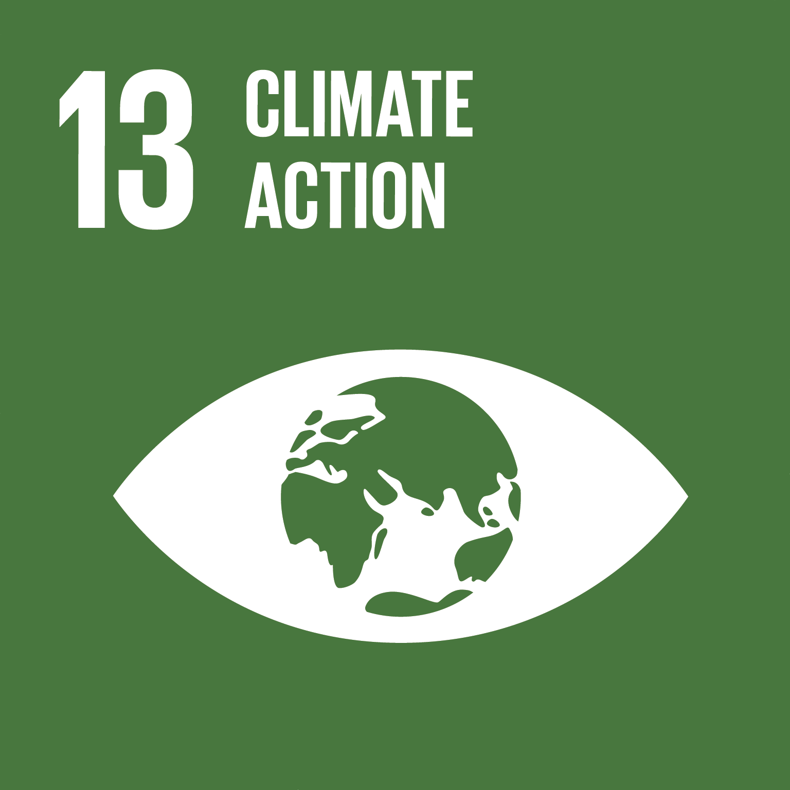
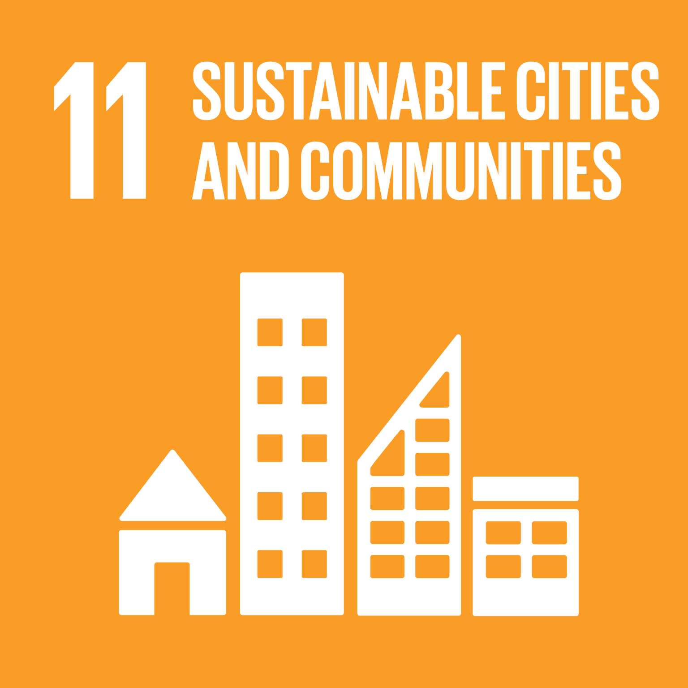
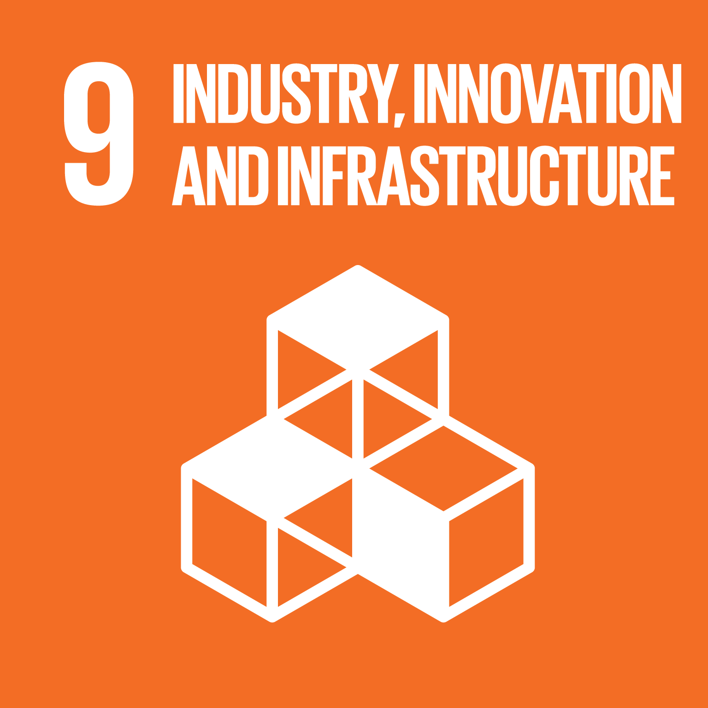
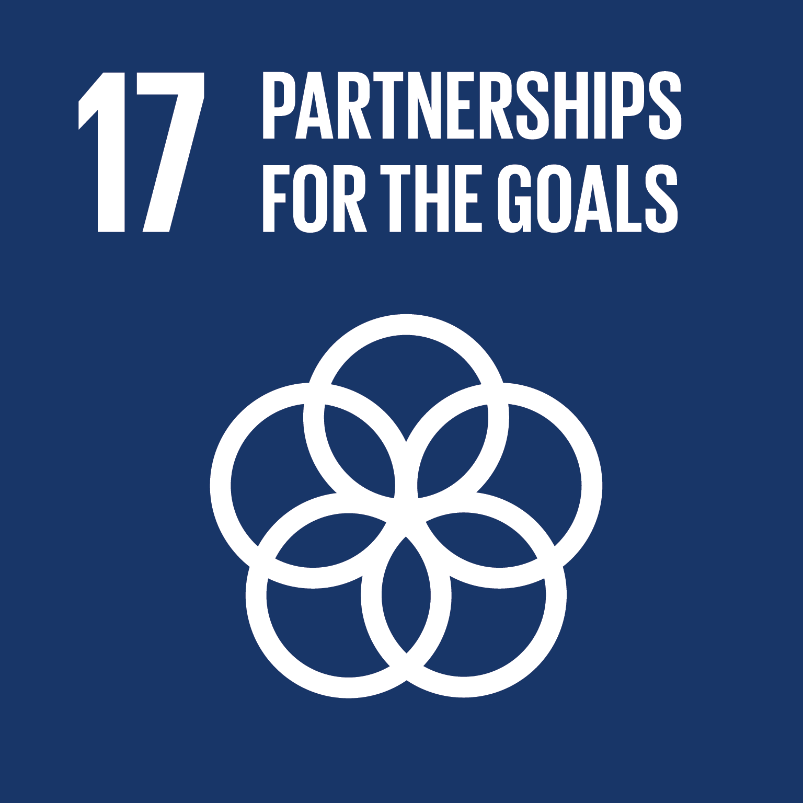

杨洁 (Jie Yang)
环境法学者 · 法学博士 · 哈尔滨师范大学助理教授
👋 欢迎来到我的个人学术网站！你可以通过 📧 yangjie9522@163.com 与我联系。
我长期从事环境法、循环经济法、欧盟环境法与比较环境法研究，关注循环经济与绿色转型背景下环境法律制度的演进及其治理机制。博士阶段在比较法框架下系统考察欧盟与中国报废汽车（End-of-Life Vehicles, ELV）法律制度的发展及其治理逻辑；目前研究进一步拓展至生态设计、可持续产品监管、生产者责任延伸与关键原材料循环利用等议题。
🔎 研究方向RESEARCH
- 环境法
- 循环经济法
- 比较法
🌍 与可持续发展目标（SDGs）的关联SDGS
我的研究关注环境法与循环经济法如何回应资源循环与绿色转型的现实需求，与联合国《2030 年可持续发展议程》中的以下目标直接相关：
-

负责任消费与生产 -

气候行动 -

可持续城市和社区 -

产业、创新和基础设施 -

促进目标实现的伙伴关系
※ 图标为联合国可持续发展目标（SDGs）官方标识，仅用于说明研究主题的关联，不构成联合国的任何认可。
🌱 研究理念PHILOSOPHY
保持对问题的好奇，尝试做有趣的研究，参与有意义的实践，创造能够回应现实需求的成果。
🔥 学术动态NEWS
- 独作论文 Integrating Life Cycle Thinking into EU Law on End-of-Life Vehicles 在 RECIEL（SSCI Q1）正式发表（2026 年 8 月接收）。
- 入职哈尔滨师范大学，任助理教授。
- 于哥本哈根大学获法学博士学位（环境法）。
- 独作论文 A Review of End-of-Life Vehicle Legal Framework in China 发表于 LEAD Journal（Scopus 收录），8 月上线。
- 在乌普萨拉大学环境法高级研讨会上作报告。
- 赴乌普萨拉大学任环境法访问学者（2023.02–2023.07）。
- 在第三届青年法学研究者会议（比利时哈塞尔特大学）报告论文。
- 参加赫尔辛基大学 LERU 联盟项目交换（2022.11–2022.12）。
- 在 2022 IUCN 环境法学会年会及 CEIG 2022 会议上报告论文。
🎓 教育背景EDUCATION
- 2021.09 – 2026.03 法学博士（环境法）· 哥本哈根大学 博士论文：Research on End-of-Life Vehicle Legal Framework: Context, Theory, Practice and Comparative Analysis
- 2022 – 2023 访学与暑期学校 乌普萨拉大学环境法访问学者（2023.02–2023.07）；赫尔辛基大学 LERU 联盟项目交换（2022.11–2022.12）；哈佛大学 & 欧洲大学研究院 Law and Logic 暑期学校（2022.06–07）
- 2018.09 – 2021.06 法学硕士（环境法）· 中南林业科技大学 硕士论文：我国废弃电子电器环境押金制度研究；海牙国际法学院国际法冬季课程（2020.01）
- 2013.09 – 2017.06 文学学士（英语）· 黑龙江八一农垦大学
💼 工作与实习经历WORK
- 2026.08 – 至今 哈尔滨师范大学 · 助理教授
- 2022.06 – 至今 Journal of Industrial Ecology（SCI 一区）· 翻译组组长 2020.07 起任中英翻译员
- 2022.05 – 2023.06 Studenterrådgivningen · 法学学业辅导教师（哥本哈根）
- 2019.09 – 2019.12 广州网路互联网科技有限公司 · 法律编辑（长沙）
📚 期刊论文PUBLICATIONS
Integrating Life Cycle Thinking into EU Law on End-of-Life VehiclesSSCI Q1 · 独作
DOI: 10.1111/reel.70083
A Review of End-of-Life Vehicle Legal Framework in ChinaScopus · 独作
欧洲环境押金制度对我国电子废弃物环境押金制度构建的借鉴
🎤 国际会议报告TALKS
- 2022.07 Successes and Failures of the EU Environmental Governance Model: End-of-Life Vehicle Recycling Systems 2022 IUCN 环境法学会年会 & CEIG 2022（全球生态完整性集团成立 30 周年：生态完整性、和平与公共卫生）
- 2022.12 The Challenges of the Polluter Pays Principle: A Case of End-of-Life Vehicle Recycling System 第三届青年法学研究者会议，比利时哈塞尔特大学，2022 年 12 月 16 日
- 2023.05 End-of-Life Vehicle Recycling Systems in the EU 乌普萨拉大学环境法高级研讨会，2023 年 5 月 9 日
🧪 科研项目PROJECTS
- 2021 – 结项 国家留学基金：国家建设高水平大学公派研究生攻博项目 编号 CSC2021108430007 · 主持人
- 已结项 国家社会科学基金项目：生态环境治理中党政问责机制研究 编号 20BZZ082 · 研究助理
- 已结项 湖南省社会科学基金项目：我国生态环境损害党和政府责任追究研究 编号 19YBA371 · 第四参与人
🏆 学术服务SERVICE
学术志愿经历
- 欧洲中国法研究协会年会 2022（100 余名报告人）· 协调人之一，哥本哈根大学国际经济法与发展研究中心
- iCourts 访问研究者学术导师（2023）
- 2022 iCourts 暑期学校志愿者
- iCourts DHL 比赛协调员（2022、2023）
期刊服务
- Journal of Industrial Ecology（SCI 一区）翻译组组长（2022.06 至今）
- Journal of Industrial Ecology 中英翻译员（2020.07–2022.05）
🛠️ 教学与技能SKILLS
- 可授课程中国环境法 · 循环经济法 · 欧盟环境法 · 欧盟法 · 国际环境法
- 工作语言中文 · 英语（良好的听说读写能力）
- 科研能力可独立开展环境法学术研究
🤝 机会OPPORTUNITIES
目前暂无正式招聘计划。但我始终乐意与对环境法、循环经济法、比较法感兴趣的同学与同行交流，也欢迎探讨合作研究、访问交流与联合发表的可能。
- 交流方向环境法 · 循环经济法 · 比较法
- 可探讨形式合作研究 · 访问交流 · 联合发表 · 学生科研指导
- 联系方式yangjie9522@163.com
※ 若后续有正式名额（如硕士研究生、研究助理等），将在此处更新。
🌿 生活花絮LIFE
工作之余，偶尔走进自然。